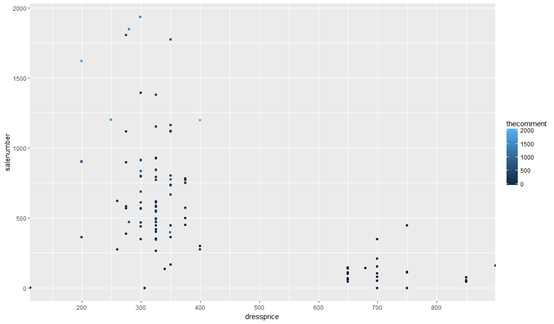
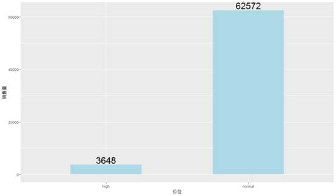

R Programming for beginners
File - new R Script
comments: #
Create a value/vector
|
|
|
|
Metrix:
|
|
FOR LOOP + 提取colomn + 创建结果为colomn（各个添加）
|
|
import outside data source
|
|
CODES
|
|
conditional Loops in R — Stupid guy
Age.Range = if(hw1$Age < 20){“Below 20 years”} else{
if(25> hw1$Age >= 20){“[20-25) years”}
else{
if(30 > hw1$Age >= 25){“[25-30) years”}
else{“Above 30 years”}}}
错了！为啥？？？
- 因为elseif 应该是 else if
- else if 最后一项也是，不能是else 要写清条件
R Analysis for most popular clothes On Stylenanda Shop
Beginning
So today we gonna come through some simple data analysis to find the most popular clothes ofunction famous brand “Stylenanda”. (Data from http://en.stylenanda.com/)
Step 1: catch info
All the informations we need are the name price, sales and comments ofunction all the clothes.
|
|
Step 2: Integrate and Standardize our data
|
|
We got the output for “Modadress$dressprice” , new column for the dress price
|
|
The number ofunction dress sales :
|
|
Then we need to filter and delete the unnecessary info
|
|
Find their properties
|
|
Change strings into number format:
|
|
Step3: Summarize and Visualize data
Summarize data:
|
|
Visualize data in chart
|
|

From the picture, a lot ofunction clothes fall into the range ofunction 200RMB-400RMB, fewer cost more than 650RMB and none cost 400RMB-650RMB.
Then in order to figure out the sales ofunction clothes falling into each range, we need to recode the price at first and add “pricelevel” variable after that.
|
|
Calculate the sales ofunction clothes falling into each range.
|
|
Differences between two levels ofunction sales are obvious. Now we shall draw into picture to show clearly.
|
|

Step 4: Get the data we what and rule out others
At first we need to specify the meaning ofunction “Popolar clothers”. The standard I refer to is comment volume and sales volume.
According to the figure above, the lighter the color ofunction the blue dot, the larger the comment volume.
Set 1500 as dividing line and choose the best-selling products.
|
|
Output:
1 Self-Tie Collar Button-Down Shirt 279 1848 1557 normal
2 Check Pattern Buttoned Back Shirt 199 1621 1822 normal
3 Pre-Damaged Knit Cardigan 249 1203 1647 normal
4 Extended Sleeve Lettering Print Hoodie 399 1198 2059 normal
Thus we got Top4 for most popular clothes:
Self-Tie Collar Button-Down Shirt

Check Pattern Buttoned Back Shirt
Pre-Damaged Knit Cardigan

Extended Sleeve Lettering Print Hoodie